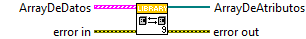
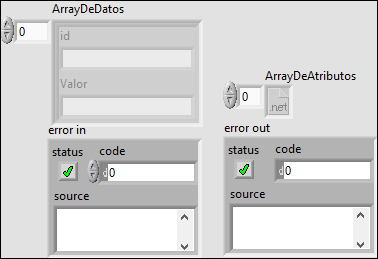
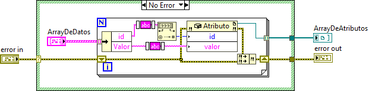
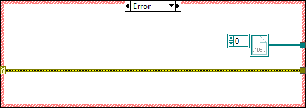

Contiene las funciones para transformar cluster en objetos .NET
Funcion que tranforma un cluster de datos al objecto .NET Atributo
Controles:
- ArrayDeDatos: Array de datos que se quieren transformar
- error in: Entrada de errores
Indicadores:
- ArrayDeAtributos: Array de objetos .NET Atributos
- error out: Error producido en la ejecucion o entrada de error si es que habia



